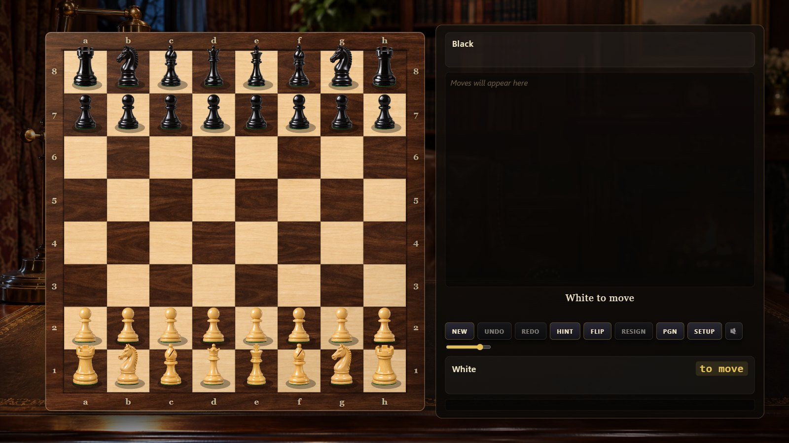
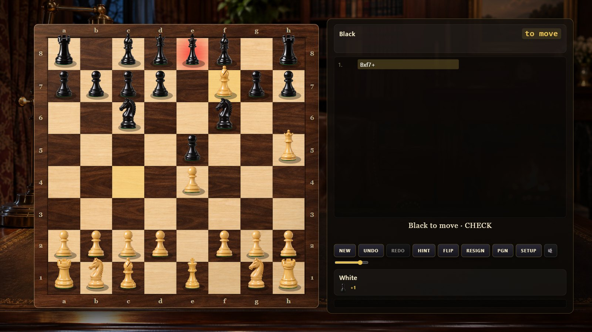
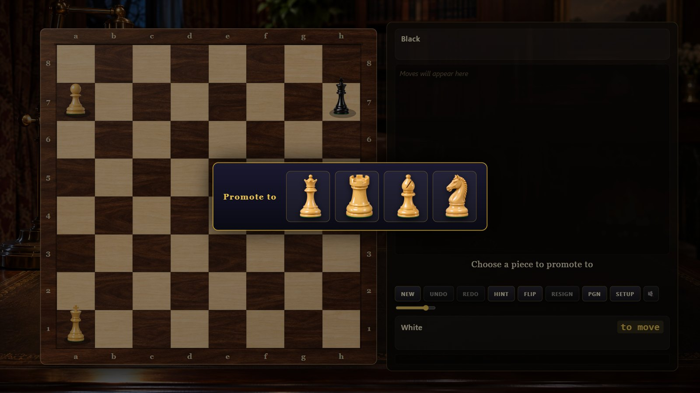
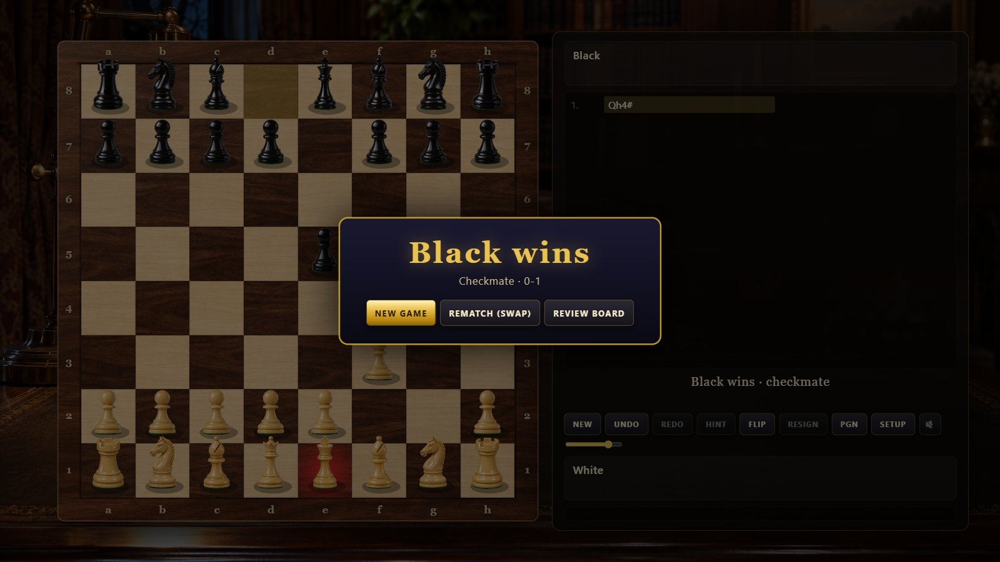
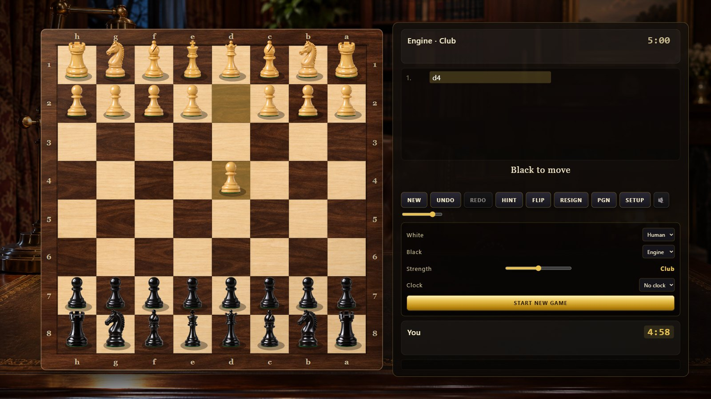

What it is
A complete chess game in plain HTML5 Canvas and vanilla JavaScript: every rule of play (castling, en passant, promotion, check, checkmate, stalemate, the fifty-move rule, threefold repetition, insufficient material), an alpha-beta engine that runs in a Web Worker so the board never stalls, photoreal pieces and a wooden board, physical move animation and synthesized sound. No frameworks, no build step, no server.
Features
Verified rules
The move generator reproduces the standard perft counts (start position to depth 4, Kiwipete, positions 3, 4 and 5) and detects every draw and mate condition.
Engine
Iterative deepening alpha-beta with quiescence, transposition table, killer and history ordering, null-move pruning, late-move reductions, check extensions, tapered piece-square evaluation, a small opening book and five strength levels from Beginner to Master.
Play your way
Human vs engine as either colour, two humans at one board, optional clocks with increments, hints, undo and redo, board flip, PGN export/import and FEN loading.
Physical feel
Pieces slide with a lift and shadow, captured pieces are knocked off to the side, castling moves both pieces, promotion morphs the pawn, the checked king glows.
Sound
Wooden set-downs that differ by piece, capture thuds, the castling double tap, check and promotion chimes, clock ticks and game-over tones, with a crackling fireplace bed — all synthesized live.
Tested headless
node tools/smoke.mjs drives real mouse input, the promotion dialog, undo/redo, PGN, draws, the engine and the clocks in headless Chrome.
Screenshots






Controls
| Action | Mouse | Keyboard |
|---|---|---|
| Move | Click a piece then a square, or drag it | — |
| New game / undo / redo | NEW / UNDO / REDO | N / U or ← / R or → |
| Hint / flip / mute | HINT / FLIP / speaker | H / F / M |
| Settings, PGN and FEN | SETUP / PGN | Esc closes |
Run it yourself
Open index.html (the engine then runs on the main thread) or serve the folder for the Web Worker engine: python -m http.server 8769, or start.cmd on Windows. See the README for the configuration and tools.